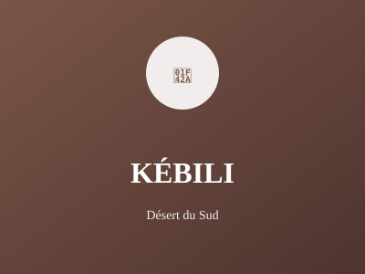

Grand désert et oasis

Grand désert et oasis du sud, Kébili est une région très peu densément peuplée. Elle offre des expériences touristiques sahariennes uniques et une culture bédouine authentique préservée.